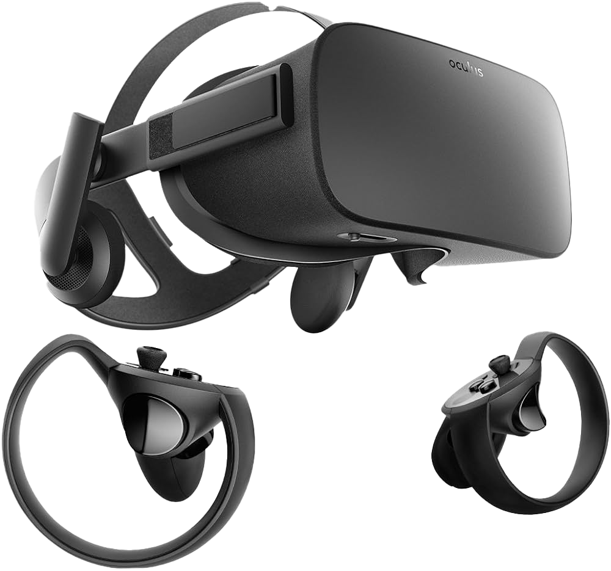
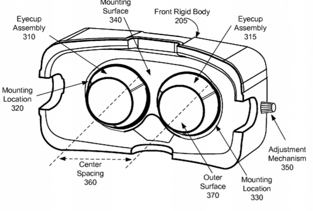
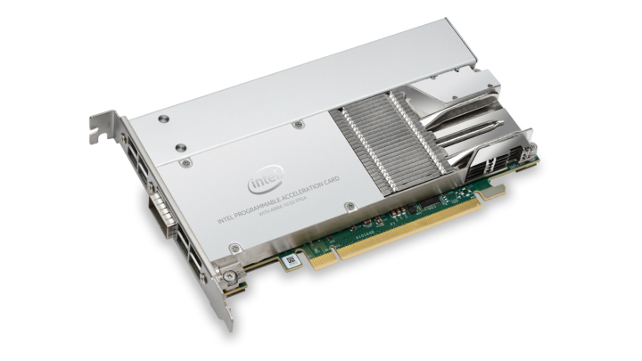
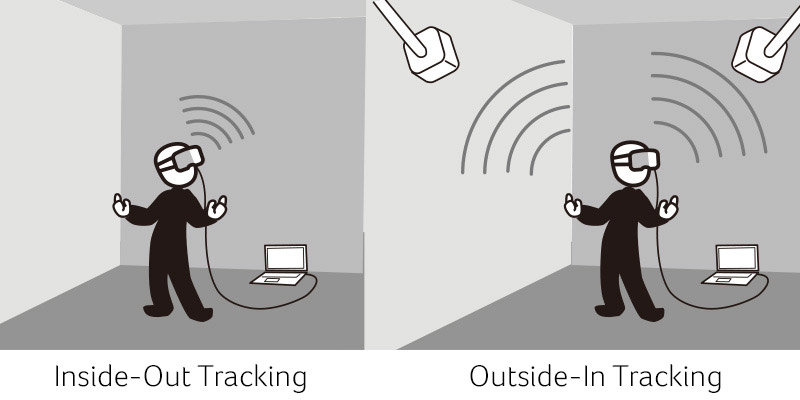
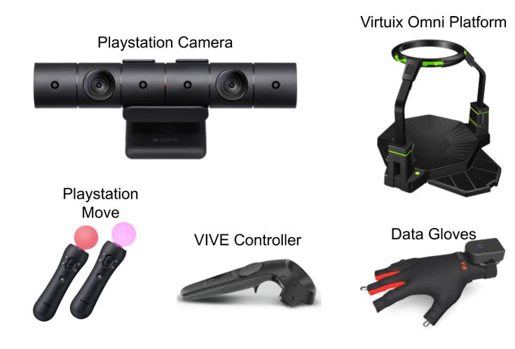

Virtual
REALITY

What is Virtual Reality?
According to Lowood (2024), virtual reality (VR) is the the use of computer modeling and simulation that enables a person to interact with an artificial three-dimensional (3-D) visual or other sensory environment. VR applications immerse the user in a computer-generated environment that simulates reality through the use of interactive devices, which send and receive information and are worn as goggles, headsets, gloves, or body suits.

Evolution
Reference Link: https://virtualspeech.com/blog/history-of-vr
Reference image taken from virtual speech
A timeline of key milestones in Virtual Reality, highlighting its development from early concepts to cutting-edge technologies.
1838
The stereoscope was created by Sir Charles Wheatstone, who was the first to describe stereopsis in 1838. In 1840, he received the Royal Medal of the Royal Society for his work explaining binocular vision. According to the research, the brain creates the illusion of depth and three-dimensional immersion by combining two photographs of the same object, each taken from a different angle. Wheatstone was able to develop the first kind of stereoscope thanks to this technology. A picture off to the side was reflected by each of the two mirrors, which were positioned at a 45-degree angle to the user's eyes.
1935
In his 1935 short story Pygmalion's Spectacles, American science fiction author Stanley Weinbaum introduced a fictitious VR model. A professor who created a pair of goggles that allowed for "a movie that gives one sight and sound taste, smell, and touch" is introduced to the story's protagonist. The narrative revolves around you, and you are a part of it. You address the characters, or shadows, and they respond.
1956
The first VR device, Sensorama, was made by cinematographer Morton Heilig and was patented in 1962. Up to four people could fit in the spacious booth at once. It stimulated all of the senses by combining a variety of technologies, including full-color 3D video, sound, vibrations, smell, and atmospheric effects like wind. Scent generators, a vibrating chair, stereo speakers, and a stereoscopic 3D screen were used for this. Heilig wanted to completely immerse people in their films and believed that the Sensorama was the "cinema of the future." For it, six short films were created.
1960
The first head-mounted display (HMD), the Telesphere Mask, was also patented by Heilig. Wide-vision stereoscopic 3D images and stereo audio were thus made available. At this point, the headset did not have motion tracking.
1961
Until two engineers from Philco Corporation named Comeau and Bryan founded Headsight. The first HMD with motion tracking was Headsight. It featured a head-tracking system and built-in video screens for each eye. This was created for the military to enable them to view dangerous situations from a distance, not for virtual reality. To allow the user to look around the room, a remote camera mimicked head movements.
1965
Ivan Sutherland, a computer scientist, presented his vision of the Ultimate Display. The concept was of a virtual world viewed through an HMD which replicated reality so well that the user would not be able to
differentiate from actual reality. This included the user being able to interact with objects. This concept featured computer hardware to form the virtual world and to keep it functioning in real-time. His paper is seen as the fundamental blueprint for VR.
"A room where the computer can manipulate the existence of matter would be the ultimate display, of course. In such a room, a chair would be suitable for sitting in. Such a place would be restrictive for handcuffs, and it would be lethal for a gunshot to be
displayed there. With the right programming, this kind of display may actually represent the Wonderland Alice entered.
1966
The first flight simulator was developed for the Air Force by military engineer Thomas Furness. This aided in the development of virtual reality since the military later contributed significantly to the development of improved flight simulators.
1968
The Sword of Damocles, the first virtual reality head-mounted display, was developed by Sutherland and his pupil Bob Sproull. This head-mount was quite basic because it could only display basic virtual wire-frame forms and was connected to a computer instead of a camera. Because of the tracking mechanism, these 3D representations altered perspective when the user moved their head. Because it was too heavy for people to wear comfortably and was hanging from the ceiling, users had to be strapped in, it was never developed beyond a lab study.
1969
Myron Krueger, a computer artist, developed a succession of “artificial reality” experiences using computers and video systems. He created computer-generated environments that responded to the people in it. These projects led to VIDEOPLACE technology which is mentioned later.
2010
Oculus VR was founded by Palmer Luckey, Brendan Iribe, Michael Antonov, and Nate Mitchell. Oculus VR created the Oculus Rift, a highly anticipated virtual reality head-mounted display.
2012
Oculus Rift Kickstarter campaign launched, quickly raising the necessary funds to make the Oculus Rift a reality, marking a new era in virtual reality development.
2014
Oculus VR was acquired by Facebook for $2 billion. This acquisition marked the transition of VR technology from niche development to more mainstream interest and investment.
2016
The Oculus Rift was released, alongside other major VR systems, including the HTC Vive, marking the beginning of the modern virtual reality era for consumers.
2017
Sony’s PlayStation VR was launched, expanding virtual reality to console gaming and providing more accessible options for consumers.
2020
Facebook rebranded to Meta Platforms, Inc. and began focusing heavily on developing the "metaverse," a virtual reality space for socializing, working, and playing, with Oculus as its key VR technology.
2021
The Oculus Quest 2 (now Meta Quest 2) was released, significantly improving on previous models with better performance, ease of use, and affordability, making VR more accessible to the mainstream market.
2022
Meta announced new developments for its metaverse project, including more advanced VR hardware (e.g., Meta Quest Pro), and made further investments into the virtual space, signaling the growing importance of the metaverse in future technologies.
2023
AR/VR devices continued to improve in terms of quality, performance, and affordability, with companies like Apple entering the market with new mixed-reality devices, further expanding the virtual and augmented reality industry.

Hardware
The VR headset is a sophisticated piece of technology that enables immersive virtual reality experiences by delivering high-quality visuals, responsive tracking, and seamless interaction within virtual environments.
Specific key components of the hardware is discussed below.
Information taken from https://www.hitl.washington.edu/projects/education/pf/whatvr1.htm
Sensory Displays
Giving your senses information from the computer-generated environment in a manner similar to how you experience the actual world is one of the fundamental objectives of a virtual reality system. Given that most individuals have two eyes, a natural method of seeing the world necessitates two computer screens rather than just one. Placing a small computer monitor in front of each eye is a popular method for creating a realistic 3D image of a virtual world. The viewpoint that the corresponding eye would perceive in a real-world setting is shown on each monitor. This type of technology is known as a binocular head-mounted display (HMD).
Stereophonic sound attractiveness is primarily due to the fact that people have two ears. A 3D soundscape can be created using two audio viewpoints, much as a 3D view can be created using two visual perspectives. However, when using free-standing stereo speakers, the sounds from both speakers are combined in both ears. The spatial features of sounds can be preserved by presenting each ear with the appropriate acoustical perspectives and employing headphones. HMDs frequently come with built-in headphones.

Computer
Triangles and other basic polygons are the foundation for the majority of 3D graphics. The number of polygons your computer system can draw in a second is a handy metric for visual computation. To find the most polygons that can be shown in your virtual environment at once, divide the number of polygons per second by 40. This is because the computer must draw separate views for two eyes at least 20 times each second. As a result, a computer capable of drawing 50,000 polygons per second may accommodate a virtual environment with up to 1250.
Process Acceleration Cards
The number of companies manufacturing 3D graphics accelerator cards for PCs has skyrocketed. These cards (as of September 1996) range in price from $300 to $20,000 and have a performance in the 500,000–2 million polygons per second range (and the cost does not necessarily equate to performance!). 3D sound cards are also made by a number of vendors. You can offer a limited number (1-4) of independent sound sources a rather accurate sense of place using these sound cards.

Tracking System
The tracking system calculates orientation and position. In contrast to watching it on television, the computer can calculate how to show the virtual environment based on your head's angle and position, giving the impression that you are actually there. Upon rotating your head, the head tracker detects the shift in position and modifies the screens appropriately.
The head tracker must have the capacity to measure orientation and position at least 20 times per second. The time interval between taking the measurements and updating the visual display must also not exceed one twentieth of a second. If you move any more slowly, your inner ear and eyes will be sending contradictory signals to your brain about which way your head is pointing. This is comparable to experiencing seasickness, or simulator-sickness as it is known in virtual reality, on a small boat in choppy waters.

Input Systems
To convey your intentions and actions to the virtual world, you use input devices. Other input systems are used in place of or in addition to keyboards and mice because it is frequently challenging to touch type or use a mouse while standing up and wearing a head-mounted display.
In essence, a wand is a portable joystick with several buttons. In order to pick up and rotate objects in the virtual world, wands frequently come with a tracker. In virtual reality, a wand can be used similarly to a mouse on a desktop computer. A 3D pointer in the virtual environment is moved by moving the wand in space. In addition to dragging and clicking virtual objects, you can rotate them about all three axes and move them in depth in addition to vertically and horizontally. For this reason, wands that have the ability to rotate objects about the X, Y, and Z axes as well as move them in those directions are sometimes referred to as six-dimensional, or 6D, controllers.
Since trackers have a limited range and distances can be arbitrarily large in a virtual environment, walking through VR is typically impractical. Some wand buttons are frequently used for "flying"; to do this, point your head or wand in the desired direction, then press the "fly" button. There is no speed limit in virtual reality.
VR gloves are more complicated than wands. They are made up of some sort of flex sensors to measure the bend of your fingers and a tracker to detect the orientation and position of your hand. Because the computer must be able to recognize complex hand signals rather than simple button presses, gloves are often costly and difficult to use.
